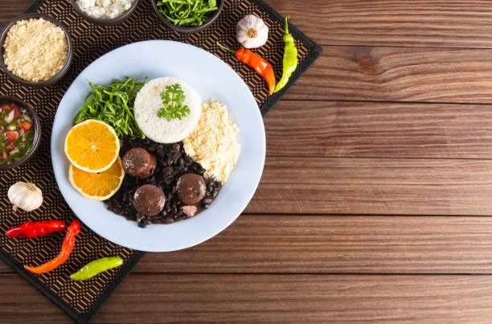
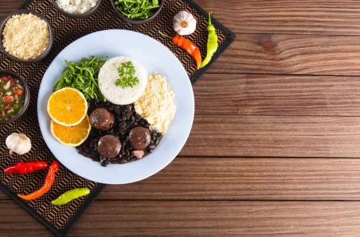

Welcome to Savory Bites, your ultimate online destination for all things food! Whether you're a seasoned chef, a culinary enthusiast, or just looking for delicious inspiration, our food website is here to tantalize your taste buds and satisfy your foodie cravings.
Explore a world of gastronomic wonders as we take you on a mouthwatering journey through the art of cooking and dining. Our food website is a treasure trove of delectable recipes, cooking tips, and in-depth culinary guides that cater to all skill levels. From quick weeknight meals to gourmet feasts, we've got you covered.
Key Features:
Delectable Recipes: Dive into a vast collection of recipes spanning various cuisines, dietary preferences, and skill levels. From classic comfort food to innovative fusion dishes, our recipes are curated to delight every palate.
Cooking Tips: Sharpen your culinary skills with our expert cooking tips and techniques. Learn the secrets to perfecting your knife skills, mastering various cooking methods, and plating dishes like a pro.
Food Blog: Immerse yourself in our informative and engaging food blog, where you'll find articles on food trends, ingredient spotlights, and insightful chef interviews. Stay updated with the latest in the culinary world.
Nutrition and Wellness: Discover the intersection of food and health with our nutrition and wellness section. Find balanced meal ideas, dietary guidelines, and tips for leading a healthier lifestyle.
Interactive Community: Join our food-loving community of home cooks and food enthusiasts. Share your culinary creations, exchange ideas, and engage in lively discussions in our forums and social media channels.
Restaurant Reviews: Uncover the best dining experiences in your area and around the world with our comprehensive restaurant reviews. Whether you're seeking hidden gems or fine dining establishments, our reviews will guide your culinary adventures.
Shopping Guides: Streamline your food shopping experience with our handpicked recommendations for ingredients, kitchen gadgets, and cookware. We make it easy to find the best tools for your culinary endeavors.
Newsletter: Stay connected with the latest food trends and updates by subscribing to our newsletter. Get mouthwatering recipes, cooking hacks, and culinary inspiration delivered straight to your inbox.
Savory Bites is your culinary companion, where passion meets the plate. Join us in celebrating the world of food, from farm to fork. Whether you're a novice cook or a seasoned pro, our food website has something for everyone. Explore, learn, and savor the magic of food with us. Bon appétit!
=======
Savory Bites is your culinary companion, where passion meets the plate. Join us in celebrating the world of food, from farm to fork. Whether you're a novice cook or a seasoned pro, our food website has something for everyone. Explore, learn, and savor the magic of food with us. Bon appétit!

 
